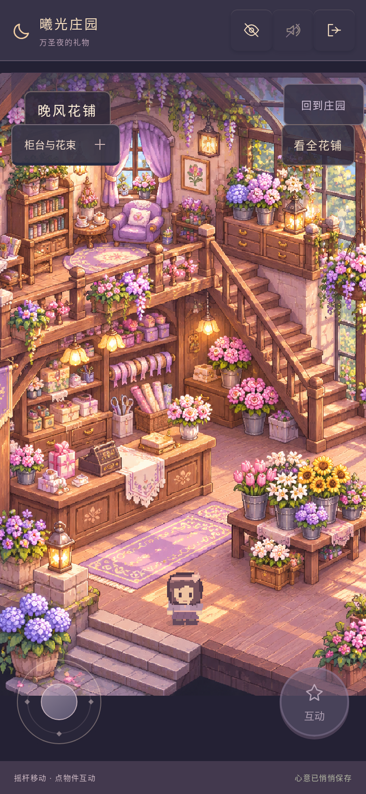
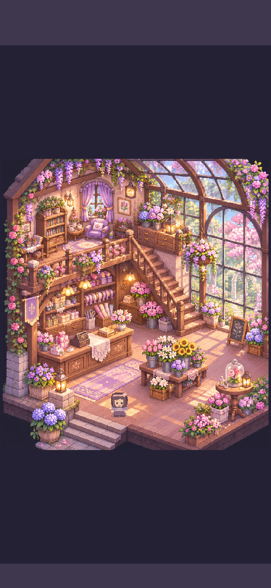
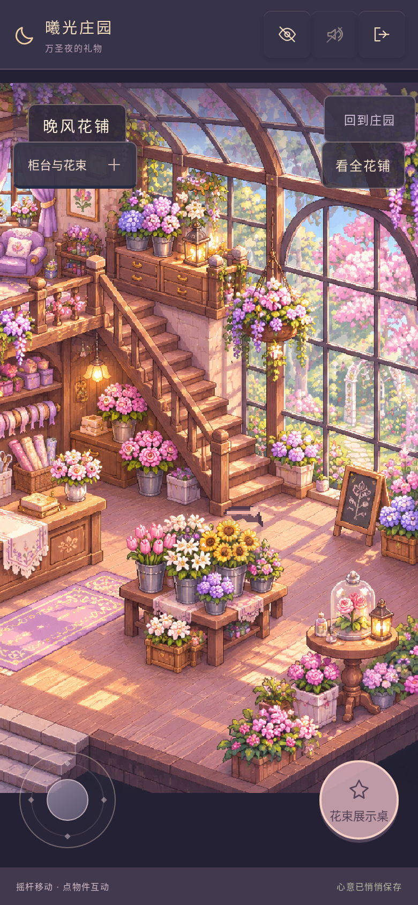
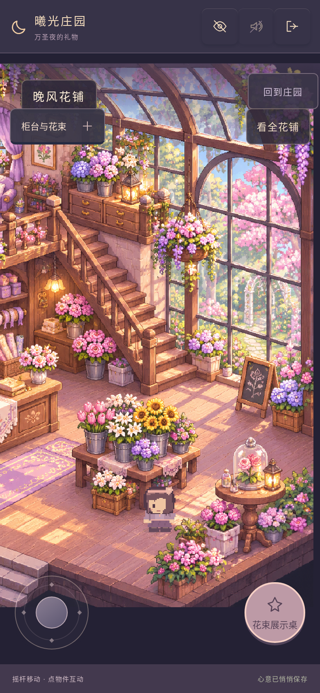
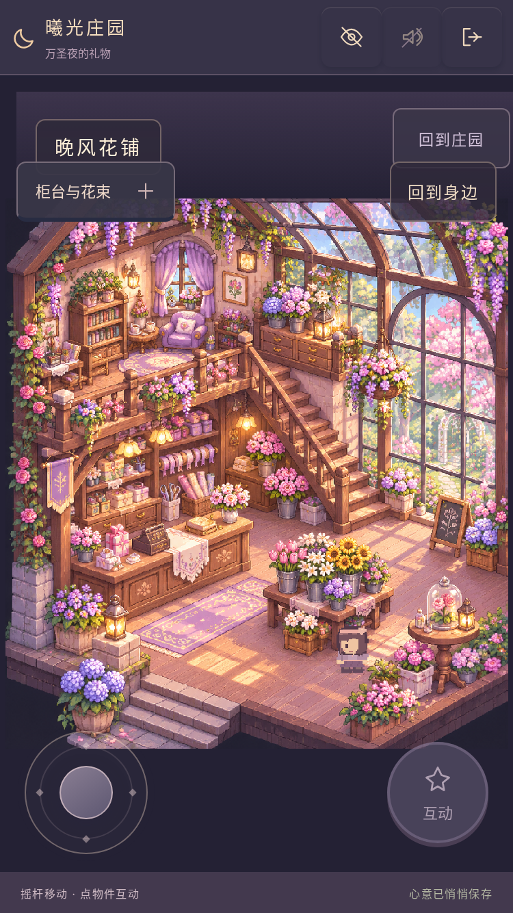

晚风花铺 · 高清原画成为游戏
本轮安装上传的美术 Skill，直接加载其中 1199×1312 PNG 原画；一楼可以走动、绕过家具、售花和包装花束，二楼完整展示。
手机试玩 · 查看游戏实际加载的 PNG · 实际测试记录

同一手机视口 · 前后实机
390×844、DPR 2，同一入口位置、同一测试存档。左图是上一轮聊天压缩 JPG 样板，右图是本轮 Skill 高清 PNG 样板；两张原画是同一构图。本轮保留画面并提高原图保真度，不宣称重绘了建筑。以下全部来自真实 Phaser 游戏。



完整阁楼、楼梯与温室
「看全花铺」显示完整原画；「回到身边」恢复跟随。隐藏界面后可拍照，双击画面恢复选项。

花桌前后 · 角色遮挡




375×667 小屏幕

安装记录、资源与边界
Skill 的四个文件完整安装在仓库根目录 .agents/skills/xiguang-scene-art/，分支 art/florist-skill-hd。查看已安装的 SKILL.md。
原始 PNG 未改写，六张透明前景只裁切并修改 alpha；复合像素一致性通过，没有生成地砖或重复描画家具。来源与 SHA-256。
二楼暂不行走，原画是固定日光，本轮没有夜景变体或可移动的整件原画家具。保留原单存档与离线 PWA，先联网完整缓存后再断网使用。WebKit 是内核模拟，实体 iPhone 的长时使用仍需真机验收。修改与验证报告。
仅发布新预览，正式版和已有预览未覆盖。本轮不扩展其他场景。